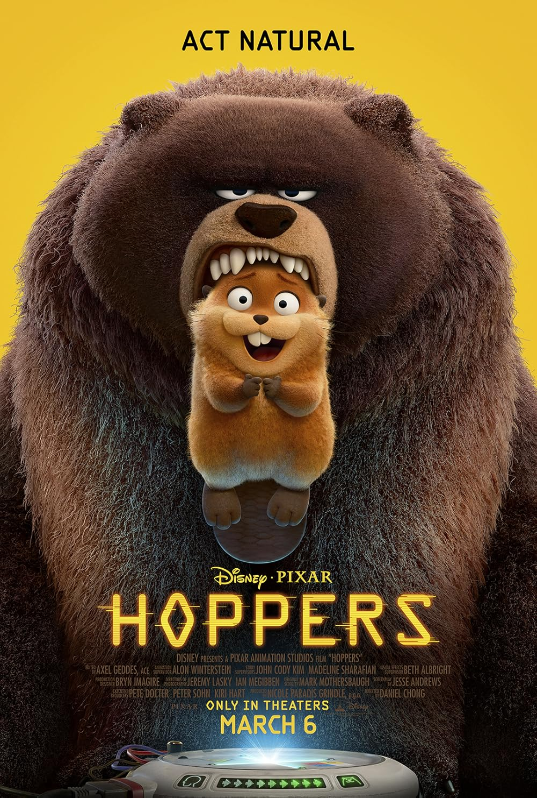

Hoppers is a movie about a young girl named Mable, who wishes to save the wildlife in a nearby pond where she would visit and spend time with her Grandma. Unfortunately the town's Mayor wants to get rid of the pond in order to construct a new roadway. Mable attempts to stop them in multiple ways, by blocking the construction area and getting people to sign a petition, however she had little to no luck with these methods. She tells some of her teachers at school and one day stumbles across a secret lab they've built. Inside they have created lifelike robots that look like animals, and the specific one they've focused on is the beaver. All it takes is one beaver to repopulate and bring back other wildlife to a once lively pond. Despite the teachers' persistence and attempts to stop Mable from interfering with their work, Mable manages to connect herself to the machine that forms a connection between her brain and the lifelike beaver robot. And from there, she has a long journey ahead of herself. She makes friends with other animals along the way in pursuit of her mission to save the pond that she holds dear to her heart. However there are manyn obstacles and challenges along the way, and it's up to Mable to rely on not only herself but her new friends to help her achieve this goal.
It's a fantastic movie, it teaches you about the importance of holding strong values/beliefs, friendship, and community. It's filed with lots of emotions, but it's also got a fair balance of comedy mixed into the movie which I think was a perfect addition! Overall, it's a solid movie that I would highly recommend if you want a fun movie to watch that doesn't take itself too seriously but is all enjoyable whether you're a kid or an adult!